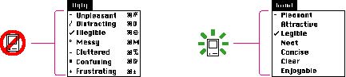

Aesthetic IntegrityAesthetic integrity means that information is well organized and consistent with principles of visual design. This means that things look good on the screen and the display technology is of high quality. Since people spend a lot of their time working while looking at the computer screen, design your products to be pleasant to look at on the screen for a long time. You may want to consider investing some of your resources in a graphic designer; the skills a graphic designer can bring to your product design are well worth the expense.Keep the graphics of the display simple. The number of elements and their behaviors should be limited to enhance the usability of the interface. Graphics--icons, windows, dialog boxes, and so on--are the basis of effective human-computer interaction and must be designed with that in mind. Don't clutter the screen with too many windows, overload the user with complex icons, or put dozens of buttons in dialog boxes. Make sure to follow the graphic language of the
interface and don't Don't use arbitrary graphic images to represent concepts. When you add nonstandard symbols to menus, dialog boxes, or other elements, the meaning may be clear to you, but to other people the symbols may appear as something different and distracting. If you need symbols other than standard ones, use graphic images that convey meaning through representation, analogy, or metaphor. For more information on designing additional appropriate symbols, see the section "Extending the Interface" in Chapter 3, "Human Interface Design and the Development Process," beginning on page 37. Figure 1-3 shows an example of how confusing arbitrary symbols can be and how much clearer a simple menu with standard symbols can be. Figure 1-3 Don't use arbitrary graphic elements  In general, match the graphic element with users' expectations of its behavior. Push buttons appear as though they push in rather than slide sideways. Indicators in sliders slide along to change values. These behaviors mapto people's expectations of how these elements behave. Give users some control over the look of their computer environments. This allows them to display their own style and individuality. It also reduces the burden on the designer of trying to create an interface that appeals to every user. When a user sets up his or her computer environment in a certain layout, it should stay that way until the user changes it. |